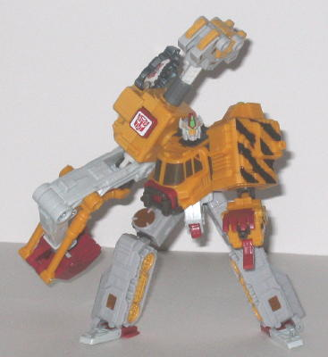
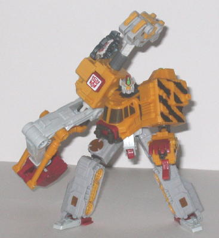

(NOTE: Because this is a repaint, this is not a full-blown review. This mainly covers any changes made to the mold and the color scheme, and merely compares it to Armada Hoist. For a review on the mold itself, read the review of Armada Hoist here .)
Of all the Transformer
homages done in recent years, Longrack is a fairly obscure one-- this toy
is a homage to the Japanese Beast Wars Neo toy of the same name, which
transformed into a giraffe, of all alt modes. The remolded head on this
toy is a pretty much spot-on representation of his predecessor's, and with
excellent, crisp mold detailing and even better paint detailing, even down
to little yellow stripes on the forehead and the brown audio receptors
on the side of the head, both of which are very small details. Other than
his new head, Longrack has only two other remolds (one very minor) done
to him when compared to Hoist, so he's probably the least remolded out
of the four Armada homage remolds that came out in the same wave. The "crane-arm
punch" gimmick on Hoist has been remolded to now require a Cyber Key--
insert it in the side of that arm, then push down on the remolded hammer-like
protrusion on the top side (or back side, depending on which mode you're
in) of the arm to have Longrack execute what is termed in his tech specs
his "Crushsteel Punch"! The hammer-like protrusion is a bit excessively
large, however, when just a simple knob like that on Armada Hoist would've
worked just as well. As a result of the remolding, Longrack has lost the
Powerlinx port that was on the top of his crane arm on Armada Hoist, but
the one on his other arm is still there the plug Minicons into. The molded-in
symbol on Hoist was removed and replaced with a painted Decepticon emblem
for
Universe Ransack
, and with the
mold reused again for Longrack, the painted Decepticon emblem has been
exchanged for a painted Autobot emblem.
As for his color scheme,
Longrack's isn't quite up to par with Hoist's (or Universe Ransack's),
but it's still decent, and pretty accurate to his Beast Wars Neo predecessor.
An orangish yellow is used mostly on the top, while a very light gray is
the prominent color in the bottom half of this mode. Both aren't bad colors,
and they're certainly fitting for a construction vehicle; I just think
Hoist's and Ransack's look a little better. The black "construction stripes"
on the side of Longrack's left arm look a little hokey, however. The rest
of the accent colors look pretty good, though-- the red and brown fit in
very nicely with their surrounding colors, and the particular shade of
green used for the lights and robot optics is a particularly striking color
when used for such small accents.
Longrack is a nice nod
to an obscure Japanese character, with some nice remolding done, but his
color scheme doesn't quite match up to the mold's previous two color schemes
in terms of sheer attractiveness. Plus, since the previous two uses of
this mold come with a Minicon, you're probably better off sticking with
either of those unless you're a completist.
Review by Beastbot